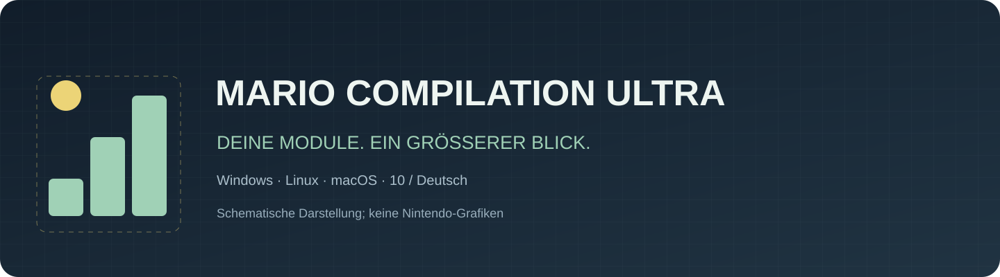
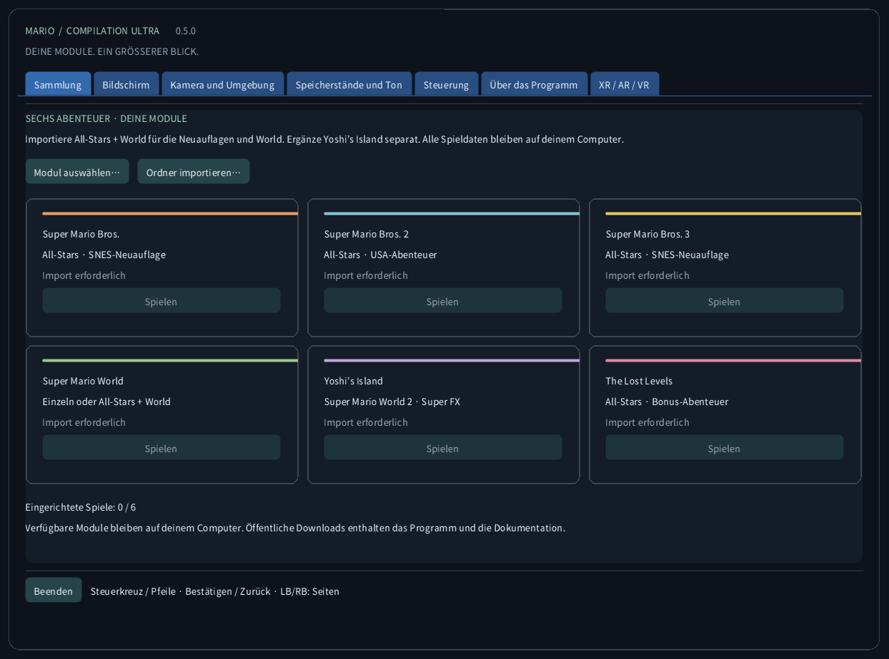
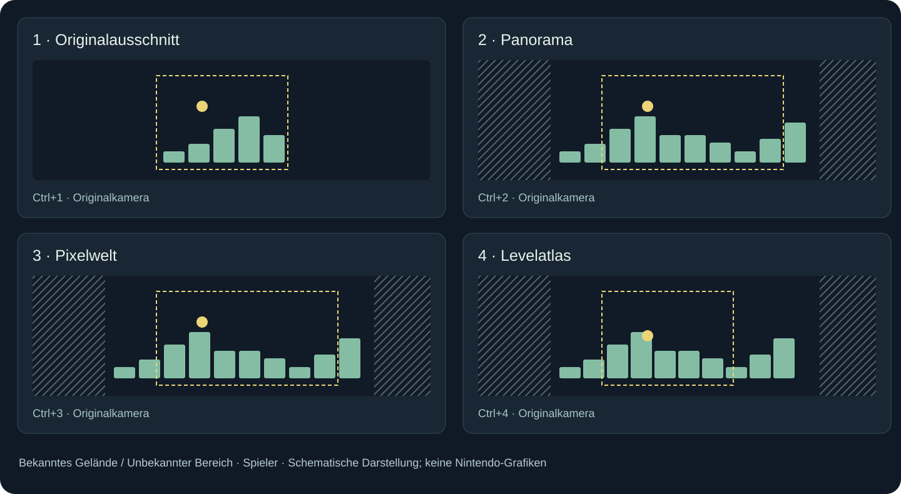
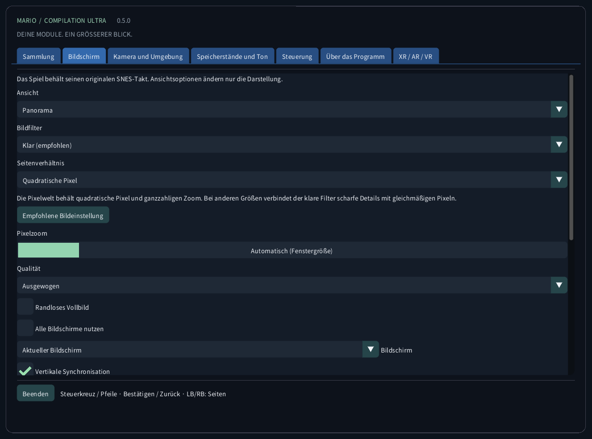
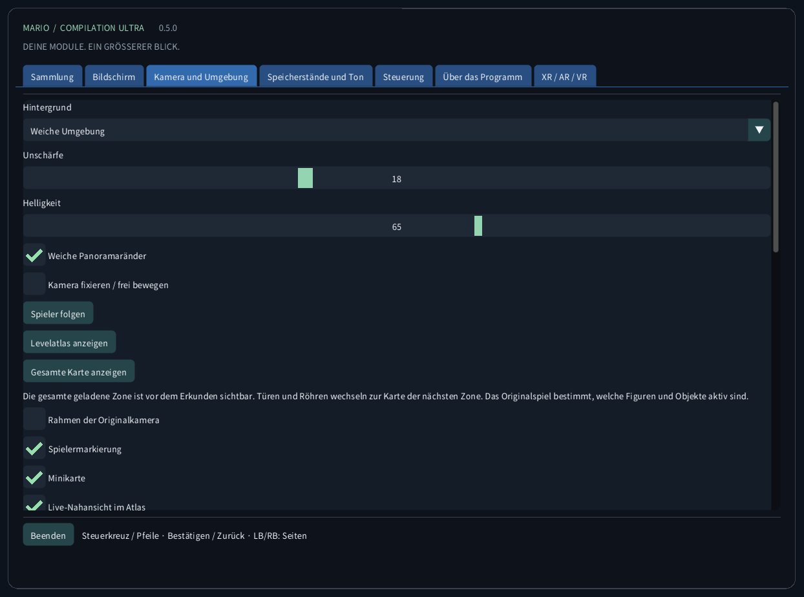
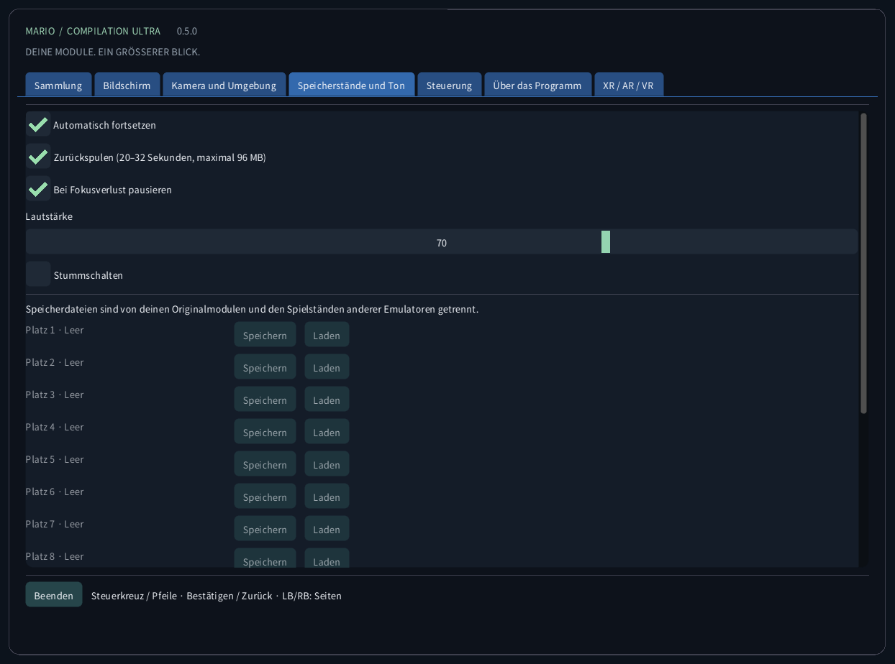
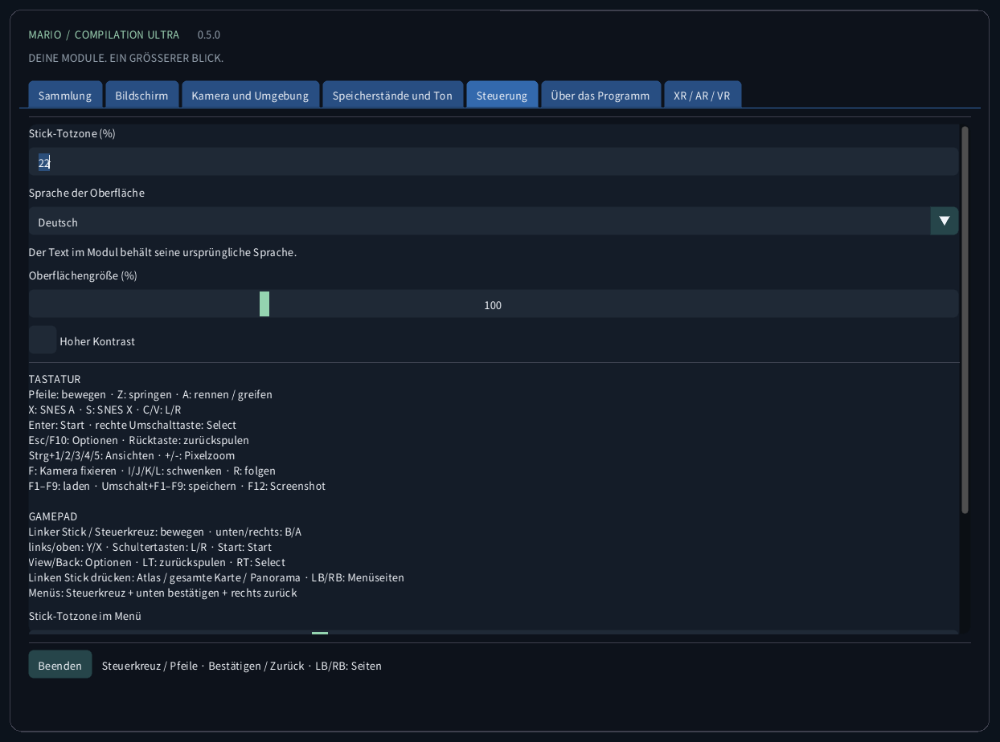
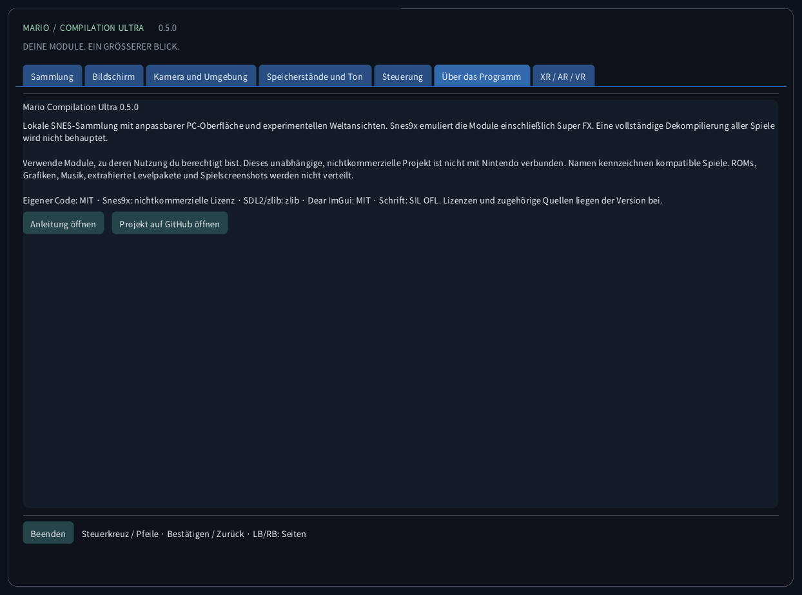
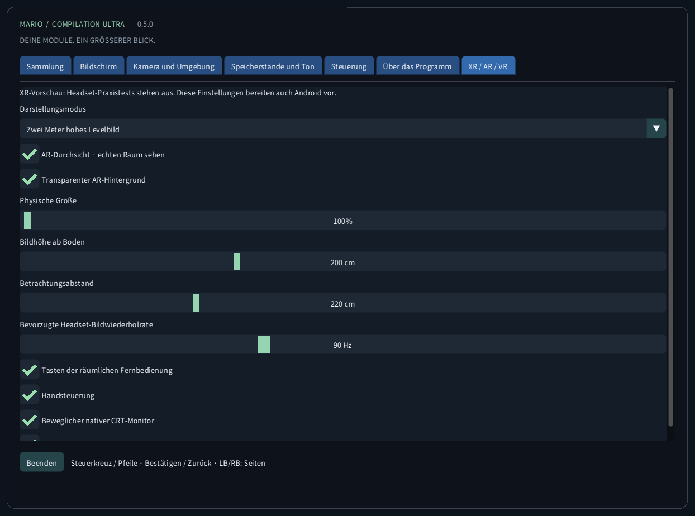

Mario Compilation Ultra 0.5.0
Lokale SNES-Sammlung mit anpassbarer PC-Oberfläche und experimentellen Weltansichten. Snes9x emuliert die Module einschließlich Super FX. Eine vollständige Dekompilierung aller Spiele wird nicht behauptet.
Download und Start vom DesktopDownload und Start vom Desktop
- Lade das Paket für deinen Computer herunter und entpacke das gesamte ZIP. Programm, SDL, Ressourcen und Anleitungen müssen zusammenbleiben. Windows: MarioCompilationUltra.exe öffnen. Linux: Play.sh starten. Mac: die App öffnen.
- Importiere eigene .sfc-, .smc- oder ZIP-Dateien mit einem einzelnen Modul über Modul auswählen, Ordner importieren oder Drag-and-drop. Die Dateiauswahl öffnet den lokalen Datenordner. Dort abgelegte kompatible Module werden beim nächsten Start erkannt.
- All-Stars + Super Mario World enthält Mario Bros. 1, Mario Bros. 2 USA, Mario Bros. 3, World und The Lost Levels. Ergänze Yoshi’s Island separat. Wähle Spielen und drücke am Originaltitel Enter oder Start; bei einer laufenden Demo nochmals drücken.
Windows: Install-Windows.ps1 kopiert das vollständige Paket in deinen Programs-Ordner und erstellt eine Desktop-Verknüpfung. Linux: Install-Linux.sh registriert diesen portablen Ordner im Menü und auf dem Desktop. Mac: App nach Programme verschieben und einen Desktop-Alias erstellen. Den gewählten Ordner beibehalten.
Windows: powershell -NoProfile -ExecutionPolicy Bypass -File .\Install-Windows.ps1 Linux: sh ./Install-Linux.sh

Pakete und Prüfung
- Windows x64: lokaler Desktop-Start und Modulausführung geprüft; zusätzlich automatische Tests.
- Linux x64: automatischer Build und ROM-freie Prüfungen. Spielbetrieb auf einem physischen Linux-PC ist ungetestet.
- macOS Intel x64 und Apple Silicon arm64: EXPERIMENTELL, NICHT AUF EINEM PHYSISCHEN MAC GETESTET. Automatische Prüfungen betreffen Build und ROM-freie Oberfläche. Ad-hoc-signiert, nicht notarisiert; Controller, Ton, Grafik und Gatekeeper auf echter Hardware ungeprüft.
Ansichtsmodi

Empfohlenes Bild: Panorama, Auto-Zoom, klarer Filter, quadratische Pixel, weiche Ränder und gedimmter Umgebungsrahmen. Bildschirm → Empfohlene Bildeinstellung ändert weder Sprache noch Ton oder Spielstände. Nächste-Pixel- und weicher Filter sowie TV 4:3 sind ebenfalls verfügbar. Die Pixelwelt behält ganzzahligen Zoom und quadratische Pixel. Scanlines folgen Spielzeilen und werden unter 2× gegen Moiré ausgeblendet.
Gesamte Karte (Strg+5) zeigt in allen sechs Spielen das vollständige Gelände der geladenen Zone ab dem ersten spielbaren Bild, ohne Erkundung. Türen und Röhren wechseln die Karte; getrennte Räume werden nicht verbunden. Mario World zeigt beide vorhandenen Geländeebenen. Ein Pfeil markiert die Spielfigur; bei freiem Platz erscheint eine Nahansicht. Die vier bisherigen Ansichten bleiben erhalten und sammeln außerhalb von World weiterhin beobachtetes Gelände. Figuren, bewegliche Plattformen und Effekte behalten die ursprüngliche Simulation und Aktivierungsreichweite. Spezialarenen ohne Geländekarte nutzen die Originalansicht. Linken Stick drücken: Atlas → Gesamte Karte → Panorama.
Erweiterte Speicherprofile und die automatische All-Stars-Auswahl gelten für die aufgeführten US-Ausgaben. Erkannte Ausgaben ohne geprüftes Profil verwenden den Originalausschnitt. Die Oberfläche übersetzt weder Geschichte noch Grafiken des kommerziellen Moduls. Eine neue native Dekompilierung aller fünf Spiele wird nicht behauptet.
| CRC32 | SNES |
|---|---|
f84305b1 | All-Stars + World (US) |
925637c7 | All-Stars (US) |
b19ed489 | Super Mario World (US) |
d138f224 | Yoshi’s Island 1.0 (US) |
cf98ddaa | Yoshi’s Island 1.1 (US) |
Android-Smartphones und -Tablets
Quest VR / AR
Steuerung
TASTATUR Pfeile: bewegen · Z: springen · A: rennen / greifen X: SNES A · S: SNES X · C/V: L/R Enter: Start · rechte Umschalttaste: Select Esc/F10: Optionen · Rücktaste: zurückspulen Strg+1/2/3/4/5: Ansichten · +/-: Pixelzoom F: Kamera fixieren · I/J/K/L: schwenken · R: folgen F1–F9: laden · Umschalt+F1–F9: speichern · F12: Screenshot GAMEPAD Linker Stick / Steuerkreuz: bewegen · unten/rechts: B/A links/oben: Y/X · Schultertasten: L/R · Start: Start View/Back: Optionen · LT: zurückspulen · RT: Select Linken Stick drücken: Atlas / gesamte Karte / Panorama · LB/RB: Menüseiten Menüs: Steuerkreuz + unten bestätigen + rechts zurück
Speicherstände und Ton
Pro Spiel gibt es neun manuelle Plätze, automatisches Fortsetzen, Batterie-SRAM und begrenztes Zurückspulen. Bis zu 96 MiB speichern etwa 20–32 Sekunden. F1–F9 laden; Shift+F1–F9 speichern. Modul-CRC, Engine-Version und Integrität werden geprüft. Andere Emulator-Saves bleiben getrennt.
Lokale Dateien
Dieser Ordner enthält settings.ini, Modulverweise, states/, saves/ und screenshots/. Importieren lädt das Modul nicht hoch und ändert das Original nicht. Sichere den Ordner vor einem Computerwechsel. Zustände benötigen dasselbe Modul und dieselbe Engine; SRAM ist separat.
Windows: %APPDATA%/ValentinWittwe/MarioCompilationUltra/ Linux: ~/.local/share/ValentinWittwe/MarioCompilationUltra/ macOS: ~/Library/Application Support/ValentinWittwe/MarioCompilationUltra/
--data-dir überschreibt den Standardpfad. Windows-Verknüpfungsupdates behalten diese Option. Lokale Dateien zeigt den tatsächlich verwendeten Ordner.
Wenn ein Spiel weiter einen Import verlangt
Wähle das Modul erneut, wenn die Datei verschoben oder das Laufwerk getrennt wurde. ZIPs müssen eine .sfc oder .smc enthalten, unverschlüsselt und gespeichert oder DEFLATE-komprimiert. Prüfe die Liste der Ausgaben und Header. Bei fehlender Schrift oder SDL das gesamte Paket erneut entpacken.
Galerie der echten Oberfläche
Die Aufnahmen stammen aus der echten App ohne geladenes Modul. Diagramme nutzen eigene illustrative Geometrie, keine Spielgrafiken. Öffentliche Downloads enthalten keine Nintendo-ROMs, Sprites, Musik, extrahierten Level oder Spielaufnahmen.






Pakete und Prüfung · 0.5.0
Sechs automatische Testsuiten prüfen eigene Daten, Menüs, Darstellung, räumliche Steuerung und Multitouch. PC- und mobile Layouts werden in zehn Sprachen erfasst; sechs lokale Spiele separat geprüft. Smartphone/Tablet wurden auf Android-Emulatoren getestet, echte Geräte und Mac-Spiel nicht. Der Nutzer bestätigte die Quest-0.4-Sammlung; AR/VR-Spiel bleibt experimentell. Details im Prüfbericht.
CTest / CI · Report · Build